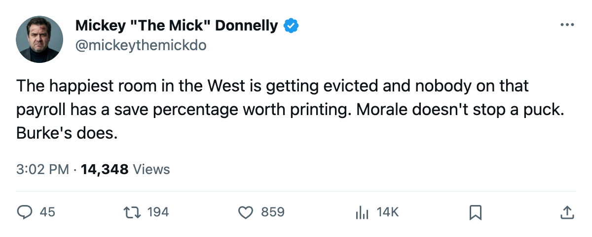
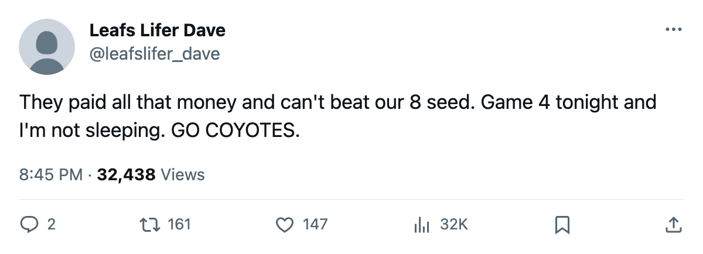

OWNED: COLORADO REACHED THE CUP FINAL LAST SPRING AND PHOENIX IS 1 WIN FROM ANOTHER FIRST-ROUND EXIT
Sean Burke is outplaying both Colorado goalies and Game 4 is in Phoenix tonight.
 Mickey "The Mick" DonnellyColumnist, ex-goalie · The Penalty Box
Mickey "The Mick" DonnellyColumnist, ex-goalie · The Penalty Box
The piece
 Colorado Avalanche finished last season in the Cup Final. They finished this regular season with 112 points, the best mark in the Pacific and the third-best in the whole league. Their club morale sits at 97.7 on the Bureau's Morale Scale, the highest in the Western Conference, a tick behind
Colorado Avalanche finished last season in the Cup Final. They finished this regular season with 112 points, the best mark in the Pacific and the third-best in the whole league. Their club morale sits at 97.7 on the Bureau's Morale Scale, the highest in the Western Conference, a tick behind  Toronto Maple Leafs at 97.9. And tonight,
Toronto Maple Leafs at 97.9. And tonight,  Phoenix Coyotes, the 8 seed at 93 points, can send them home.
Phoenix Coyotes, the 8 seed at 93 points, can send them home.
The series is 2-1 Phoenix after three one-goal games. The top seed lost Game 1 at home 2-1, won Game 2 at home in overtime 3-2, and dropped Game 3 in Phoenix 3-2. Game 4 is at the same building.
The goaltending is the whole problem.  Sean Burke84 carries a 1.90 GAA and .928 in three starts for Phoenix. Colorado went to
Sean Burke84 carries a 1.90 GAA and .928 in three starts for Phoenix. Colorado went to  Jamie Storr83 first: 2.33 and .865 over two. Then
Jamie Storr83 first: 2.33 and .865 over two. Then  Trevor Kidd83 for one, 2.00 and .900. Burke has been sharper than either. Storr's .865 is the save percentage of a backup and the club behind him is paying him to be better than that. I stopped more rubber than he has in this series, and I had a bad back.
Trevor Kidd83 for one, 2.00 and .900. Burke has been sharper than either. Storr's .865 is the save percentage of a backup and the club behind him is paying him to be better than that. I stopped more rubber than he has in this series, and I had a bad back.
Colorado carries $71.56 million. Phoenix carries $47.81 million. The top seed pays $71.56 million and trails the team that pays $47.81 million.  Peter Forsberg95 has 2 points in 3 games.
Peter Forsberg95 has 2 points in 3 games.  Joe Sakic88 has 2.
Joe Sakic88 has 2.  Milan Hejduk88 leads the club with 4. The names are real. The production in this series is not.
Milan Hejduk88 leads the club with 4. The names are real. The production in this series is not.
The room is not the problem. The Bureau's Morale Scale has them at 97.7, the happiest in the West. When the room is fine and you are losing, the blame goes up the chain. That is the coach for the goaltending shuffle and the two biggest-name forwards for going quiet when it counts. Chris McAllister68 sits in that locker room at a perfect 100 morale. He is a 69-overall defenseman logging 13.6 minutes a night and he is not closing out a first-round series.
Game 4 is at Phoenix. The 8 seed won Game 3 on their own ice. Colorado is 0-1 on the road in this series. If Phoenix takes Game 4, the club that reached the Cup Final last June packs for the summer after being outplayed by the lowest seed in their conference.

